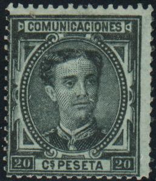
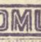
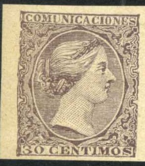

Return To Catalogue - Spain overview - Spain 'Comunicaciones' 1870-1872 - Spain 'Comunicaciones' 1873 - Inscription 'Comunicaciones' 1874-75
Note: on my website many of the
pictures can not be seen! They are of course present in the
catalogue;
contact me if you want to purchase it.
5 c brown 10 c blue 20 c green 25 c brown 40 c brown 50 c green 1 P blue 4 P lilac 10 P red
For the specialist: this issue has watermark 'tower' and perforation 14. Stamps with holes are used telegraphically (value * to ***).
Value of the stamps |
|||
vc = very common c = common * = not so common ** = uncommon |
*** = very uncommon R = rare RR = very rare RRR = extremely rare |
||
| Value | Unused | Used | Remarks |
| 5 c | * | * | |
| 10 c | * | c | |
| 20 c | *** | *** | |
| 25 c | * | * | |
| 40 c | *** | *** | |
| 50 c | ** | ** | |
| 1 P | *** | *** | |
| 4 P | *** | *** | |
| 10 P | R | RR | |
I know that the forger Fournier made a forgery of the 10 P value:

Unfinished Fournier forgeries of the 10 P value as found in the
Fournier Album. The design is clearly not as detailed as the
genuine stamp.


2 c brown 5 c orange 10 c brown 20 c black 25 c olive 40 c brown 50 c green 1 P grey 4 P violet 10 P blue
These stamps have perforation 14. Stamps with holes are used telegraphically (value * to ***).
Value of the stamps |
|||
vc = very common c = common * = not so common ** = uncommon |
*** = very uncommon R = rare RR = very rare RRR = extremely rare |
||
| Value | Unused | Used | Remarks |
| 2 c | *** | *** | |
| 5 c | *** | *** | |
| 10 c | ** | c | |
| 20 c | RR | RR | |
| 25 c | *** | * | |
| 40 c | RR | RR | |
| 50 c | *** | *** | |
| 1 P | *** | *** | |
| 4 P | RR | RR | |
| 10 P | RR | RR | |

Postal forgery of the 1 P value. Postal forgeries of the 4 P and
10 P also exist.
Sperati seems to have made forgeries of the 20 c, 40 c, 4 P and the 10 P (two types). Images of these stamps can be found at http://www.graus.com. Sperati used genuine lower value stamps, from which he removed the image and printed his forgery. Thus the paper and cancels of the forgeries are genuine.

Sperati forgery of the 20 c value. It can be recognized by the
white space below the "I" of "JULIA" (the
shading line ends too soon). Also there are some white smudges in
the first "E" of "PESETA".

Sperati forgery of the 40 c, Reproduction 'A', there is a white
dot in the frameline above the "P" of
"PESETA". A Reproduction 'B' also exists (sorry, no
image available yet).

The 4 P was made from a 40 c forgery by Sperati and consequently, the 4 P shows the secret marks of the 40 c value ("M" of "COMUNICACIONES" open at the bottom) instead of the secret mark of the genuine 4 P value (right leg of the "A" of "COMUNICACIONES" open at the bottom).

Reproduction 'A' of the 10 P by Sperati. There are two large
spots of color around the elliptic frame (see zoom-ins next to
the forgery).
A Reproduction 'B' of the 10 P seems to exist, but I have never seen it. It is quite deceptive.
2 c green 2 c black 5 c blue 5 c green 10 c brown 10 c red 15 c brown 15 c yellow (official stamp) 20 c green 25 c blue 30 c grey 40 c brown 50 c red 75 c red 1 P purple 4 P red 10 P red
Value of the stamps |
|||
vc = very common c = common * = not so common ** = uncommon |
*** = very uncommon R = rare RR = very rare RRR = extremely rare |
||
| Value | Unused | Used | Remarks |
| 2 c green | * | c | |
| 2 c black | * | * | |
| 5 c blue | * | c | |
| 5 c green | ** | * | |
| 10 c brown | * | c | |
| 10 c red | *** | * | |
| 15 c brown | * | vc | |
| 15 c yellow | * | * | Official stamp |
| 20 c | ** | * | |
| 25 c | * | c | |
| 30 c | ** | c | |
| 40 c | *** | * | |
| 50 c | *** | c | |
| 75 c | *** | * | |
| 1 P | *** | c | |
| 4 P | R | ** | |
| 10 P | RR | *** | |

(This stamp has the 'punched hole cancel' repaired, pretending to
be an unused 1 P stamp)

Postal forgery of the 1 P value (Type 1 described in Fletcher's
book); the ornamental pattern is different from a genuine stamp.
It also exists with perforation.
Postal stationery exists in the same design: 5 c green, 10 c brown, 10 c red, 15 c blue, 15 c and brown.
Fiscal stamp in a similar design, with inscription "POLVORA
Y EXPLVOS", reduced size. I've also seen the value 20 c
black.
The stamp forger Fournier made forgeries of the 4 P and 10 P values; according to the Serrane Guide they exist with a rectangluar cancel "CERTIFICADO 14 MAYO 9 COROGNA" and the word "PESETAS" is touching the line below it:

A forged "CERTIFICADO 14 MAY.99 (CORDOBA)" cancel that
Fournier might have used on the above forgeries.

Segui forgeries of the 20 c, pretending to be an error of color?

A mystery stamp in the above design, with the portrait of Queen
Victoria of Great Britain(?) in the center. I've been told that
these are actually Christina Essays, they exist in the several
colours.
For stamps of Spain issued from 1900 to 1920 click here.
Stamps - Briefmarken - Timbres-Poste - Postzegels - Francobolli - Estampillas


{kind=link}
{kind=link}
{kind=link}
{kind=link}